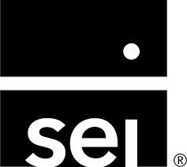

Worked as a QA Engineer on an enterprise Wealth Management platform supporting Capital Markets, Trade Lifecycle processing, Application Modernization, API validation, SQL verification, regression testing, and release validation in Agile environments.

The SEI Wealth Management Platform supports investment operations, portfolio management, trade processing, settlements, and reporting for financial institutions.
As a QA Engineer, I validated end-to-end business workflows, APIs, SQL data integrity, regression suites, and release deployments while working closely with developers, business analysts, and product owners.
Years QA Experience
Test Cases
Defects Verified
Production Releases
The application supports Capital Markets operations by processing securities transactions from trade initiation through settlement and validation.
Buy / Sell trade captured in the system.
Validate business rules and mandatory fields.
Verify securities movement without cash settlement.
Confirm successful settlement and status updates.
Worked closely with multiple stakeholders throughout the software development lifecycle to ensure quality delivery and successful sprint completion.
Clarified business requirements, acceptance criteria, and functional workflows before test planning.
Discussed defects, validated fixes, and coordinated regression testing.
Participated in demos, knowledge transfer, release discussions, and sprint handovers.
Worked collaboratively on planning, execution, defect triage, and release validation.
Reviewed business requirements and prepared test estimations and testing strategy.
Executed Functional, Smoke, Sanity and Regression testing across multiple releases.
Logged, tracked and verified defects using JIRA and Rally.
Participated in sprint planning, daily scrum, retrospectives, onsite demos and release validation.